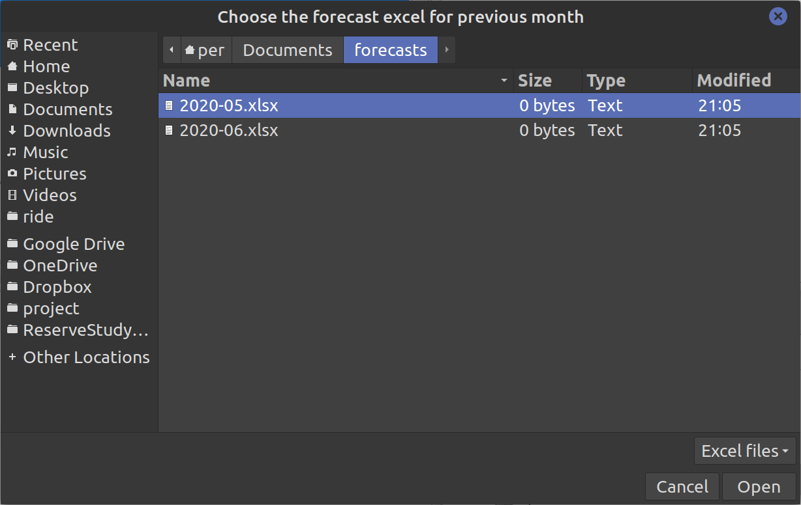
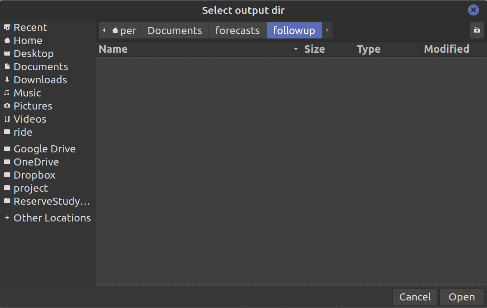
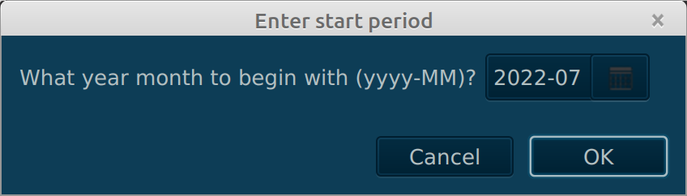

Interacting with Gade
Gade injects an io component into the session to enable user interaction as well as access
to Gade contexts such as the current project directory etc.
run io.help() for a description of each method. Some highligts are:
Files and folders
File projectDir();
File projectFile(String relativePath);
File scriptFile();
File scriptDir();
Here is an example:
file = io.projectFile("test.csv")
def table = Table.read().csv(file)
Display images and charts in the Plot tab
void display(Node node, String... title);
Example:
import tech.tablesaw.api.*
import se.alipsa.gade.chart.*
table = Table.read().csv(io.projectFile("/data/sessions.csv"))
chart = AreaChart.create(
"dbsessions",
table.column("user_name"),
table.column("sessions")
)
io.display(chart, "Sessions")
void display(Image img, String... title);
Example:
svgFile = new File(io.projectDir(), "svgplot.svg").getAbsolutePath()
io.display(svgFile, "sin -π")
io.display(io.readImage(svgFile), "svgplot")
readImage is using the fxsvgimage library to convert the svg file. In many cases this will produce a better
result than the web view but not always. The fxsvgimage is in pretty early stages of development so
in the future Gade will switch to using it always but for now, you have these two ways of displaying the image
that you can use depending on what gives the best result.
Display tabular data in the View tab
void view(Table table, String... title)
Here is an example:
import tech.tablesaw.api.*
table = Table.read().csv(io.projectFile("data/boston-robberies.csv"))
io.view(table)
Display html in the View tab
void view(String html, String... title);
Here is an example:
io.view("<h1>Hello world3</h1>", "viewHtml")
Note: You can pass an url, file or html content to the view function. E.g:
io.view("http://www.alipsa.se", "view url")
io.view(io.projectFile("data/hello.html"), "view file")
io.view("<h1>Hello world2</h1>", "view htmlcontent")
Show help
The io.help() function can be used to display info about an object or a class.
io.help(myModel)
io.help(String.class)
The io.javadoc() function displays java doc for the class if it is an open source class available at javadoc.io.
You can pass either the class, the fully qualified classname as a string, or the dependency information. Here are some examples
io.javadoc(myTable)
io.javadoc(Table.class)
io.javadoc("tech.tablesaw.api.Table")
io.javadoc("tech.tablesaw", "tablesaw-core")
io.javadoc("tech.tablesaw:tablesaw-core:0.43.1")
Use the connections defined in the connections tab
Table dbSelect(String connectionName, String sqlQuery)
int rowsInserted dbInsert(String connectionName, String sqlQuery)
int rowsUpdated dbUpdate(String connectionName, String sqlQuery)
int rowsDeleted dbDelete(String connectionName, String sqlQuery)
Here are some examples:
table <- io.dbSelect("test", "select * from mytable")
int rowsAffected = io.dbInsert("test", "insert into mytable (name, id) values ('bar', 123")
int rowsAffected = io.dbUpdate("test", "update mytable set name = 'foo' where id = 123")
int rowsAffected = io.dbDelete("test", "delete from mytable where id = 123")
User input
It is also possible to do simple gui input interaction with the user. There are
several methods available in the io object:
- prompt - Pops up a dialog prompting for a text input
- promptPassword - Pops up a dialog prompting for a password input (input hidden and replaced with a *
- promptSelect - Pops up a dialog prompting the user to select from a combobox/li>
- promptDate - Pops up a dialog prompting for a date
- promptYearMonth - Pops up a dialog asking the user to select a year month
- chooseFile - Opens a file chooser dialog
- chooseDir - Opens a directory chooser dialog
Here is an example:
fileType = io.prompt(title = "What kind of filetype?", message = "Enter the extension here")
println("Filetype is " + fileType)
file = io.chooseFile(
"pick a file",
".",
fileType,
"*." + fileType.toLowerCase(), "*." + fileType.toUpperCase()
)
println("File chosen was" + file)
dir = io.chooseDir("Select output dir", ".")
println("Output dir set to" + dir)
prompt
Allows a user to enter string input which we can use in subsequent code. It is defined as follows:
String prompt(String title, String headerText, String message, String defaultValue)
Two simpler versions exists;
String prompt(String title, String message)
String prompt(String message)
The following example:
chooseFile
Allows a user to pick a file. it is defined as follows:
File chooseFile(String title, String initialDir, String description, String... extensions)
The extensions parameter (String...) are the allowed file patterns (typically extensions) that the user can pick.
The following example:
file = io.chooseFile(
"Choose the forecast excel for previous month",
".",
"Excel files",
"*.xls", "*.xlsx"
)
Will result in the following (blocking) pop up:

chooseDir
Allows a user to pick a directory. It is defined as follows:
File chooseDir(String title, String initialDir)
The following example:
dir = chooseDir("Select output dir", ".")
Will result in the following (blocking) pop up:

promptDate
Pops up a date picker dialog allowing the user to pick a date. It is defined as follows:
promptDate (String title, String message, String outputFormat)
Parameters:
- outputFormat - determines the format of the picked date in the dialog as well as in the
return value
return value: a character string formatted according to the outputFormat param or
in the format "yyyy-MM-dd" if no outputFormat is given.
Example:
import java.time.*
date2 = io.promptDate(
"Date",
"Another date",
LocalDate.now()
)
println("Date is" + date2)
promptYearMonth
promptYearMonth(String title, String message, YearMonth from, YearMonth to, YearMonth initial)
Parameters:
- from - a character string with the start year month than can be chosen in the format "yyyy-MM".
Default value NA will be converted to the initial date minus 3 years
- to - a character string with the en year month than can be chosen in the format "yyyy-MM"
Default value NA will be converted to the initial date plus 3 years
- initial - the initial (default) value in the format "yyyy-MM"
Default value NA will be converted to current year month.
import java.time.*
fileType = io.promptYearMonth(
"Enter start period",
"What year month to begin with (yyyy-MM)?",
YearMonth.of(1970, 1), YearMonth.now().plusYears(10), YearMonth.now()
)
